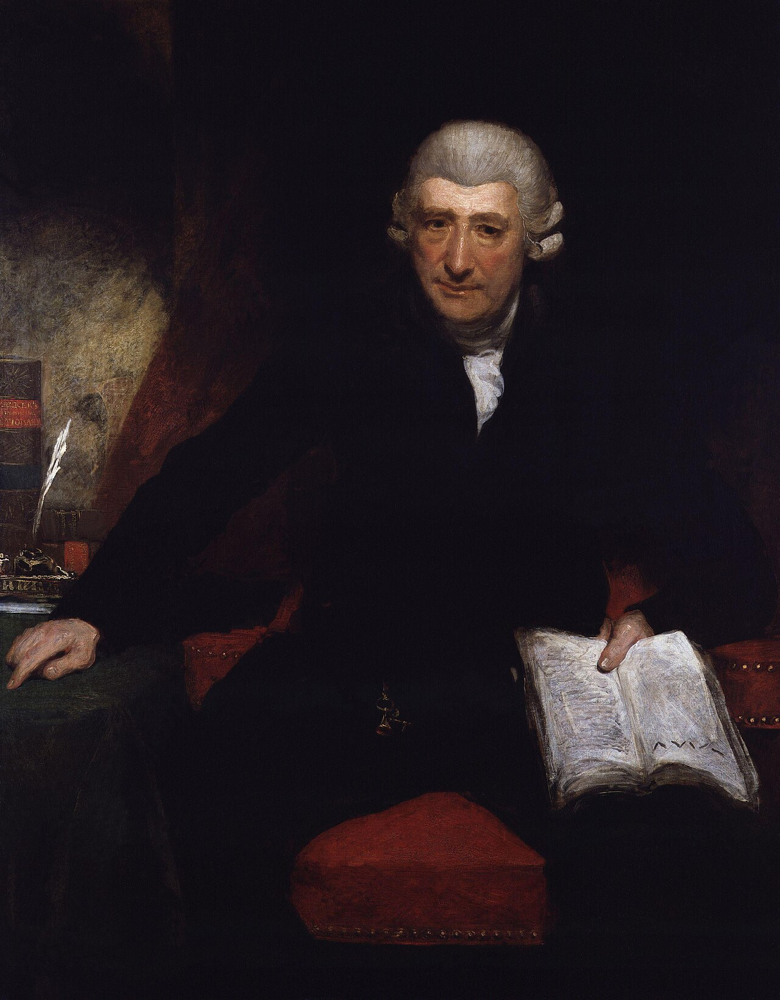
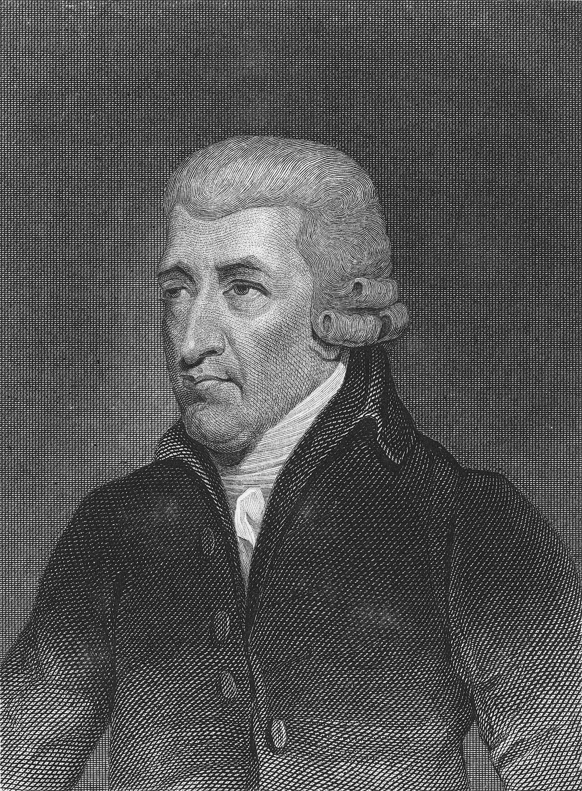
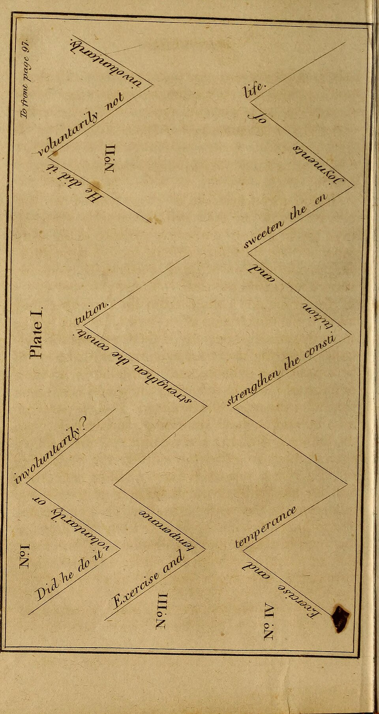
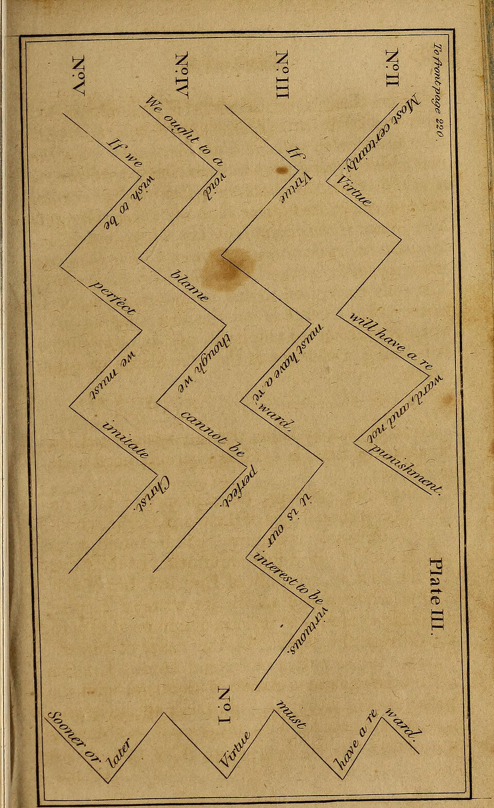

An historical reference collection · 1732–1807
John Walker
Digital Library
Explore the art of elocution, rhetoric, pronunciation, gesture, and the expressive voice through searchable editions of Walker’s works.
BetaThis digital library is still under development.
Curated byAnders Muskenswith the assistance of ChatGPT
Enter the collection

John Walker · 1732–1807
Actor, teacher, lexicographer
Walker began his career on the stage, appearing at Drury Lane under David Garrick and later in Dublin. He left acting in 1768 and became a teacher and lecturer on elocution. His Elements of Elocution (1781) and Critical Pronouncing Dictionary (1791) made him one of the best-known authorities on English speech of his time.


The collection
Choose a volume
Each edition preserves original pagination while adding full-text search, cross-references, bookmarks, and instant historical dictionary lookup.
Visual explorations
Three ways into Walker’s system
Follow Walker’s ideas spatially, then enter the original text at any term.
Portrait by Henry Ashby, engraved portrait after T. Clerk, and plates from Elements of Elocution (1811), via Wikimedia Commons. Public-domain works.
Saved on this device
My bookmarks
·